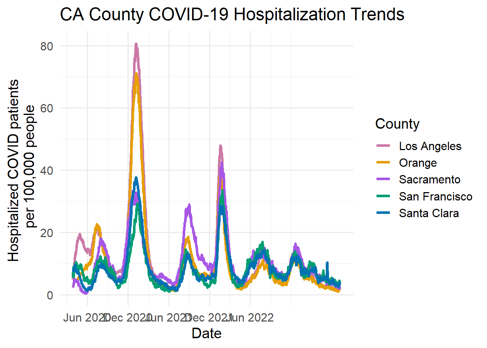

Up until now we have only used GitHub as a tool for reproducibility and version control, but now we will practice using it as a team. There are more pitfalls to watch out for when using GitHub as a team because you can encounter MERGE CONFLICTS. Merge conflicts can occur when two people push changes to the same part of a file. The best way to avoid this is to have a clear division of tasks, pull before you begin working, and to always commit, pull then push regularly.
(Team member 1) Set up your gitignore file by ignoring your R projects, html, and html files. Commit, pull, push!
Preparing data
Our plot from lab 6 improved on the original plot, but one issue it had was the range of the y-axis. Some counties had much higher counts than others, making it hard to see the trends for those with low counts. Missing from the plot was information about how extreme the counts are given the populations of the counties. For this lab we will be improving upon our plot by normalizing county hospitalization counts using their population and formatting dates.
First we need to prepare our data and starting plot.
1a.
(Team member 2) Move copies of the California COVID hospitalizations and county population data sets into this repo in a new folder named ‘data’. Commit, pull, push!
1b.
(Team member 1) Make a new Markdown file named ‘README.md’ and save this in the data folder. This will be the data README which will explain where the data came from. Add a link to this file of where the covid hospital data came from. Commit, pull, push!
1c.
(Team member 2) Read in and join the COVID hospitalization and population data sets. Check that you have the expected number of rows and columns. For the rest of this lab it is up to your group to decide the division of tasks, but both people on the team need to edit this document.
Solution
library(tidyverse)
── Attaching core tidyverse packages ──────────────────────── tidyverse 2.0.0 ──
✔ dplyr 1.1.2 ✔ readr 2.1.4
✔ forcats 1.0.0 ✔ stringr 1.5.0
✔ ggplot2 3.4.2 ✔ tibble 3.2.1
✔ lubridate 1.9.2 ✔ tidyr 1.3.0
✔ purrr 1.0.1
── Conflicts ────────────────────────────────────────── tidyverse_conflicts() ──
✖ dplyr::filter() masks stats::filter()
✖ dplyr::lag() masks stats::lag()
ℹ Use the conflicted package (<http://conflicted.r-lib.org/>) to force all conflicts to become errors
library(here)
here() starts at C:/Users/Catalina Medina/Documents/isi-buds-program/isi-buds-2023/labs/2023-day07-lab-instructos-data-wrangling2
Rows: 67000 Columns: 9
── Column specification ────────────────────────────────────────────────────────
Delimiter: ","
chr (1): county
dbl (7): hospitalized_covid_confirmed_patients, hospitalized_suspected_covi...
date (1): todays_date
ℹ Use `spec()` to retrieve the full column specification for this data.
ℹ Specify the column types or set `show_col_types = FALSE` to quiet this message.
Rows: 58 Columns: 2
── Column specification ────────────────────────────────────────────────────────
Delimiter: ","
chr (1): County
dbl (1): Population
ℹ Use `spec()` to retrieve the full column specification for this data.
ℹ Specify the column types or set `show_col_types = FALSE` to quiet this message.
hospital_pop <- janitor::clean_names(population_og) %>%inner_join(hospital_og, by ="county")
We are going to focus on only 5 counties so make a data frame for only Los Angeles, Orange, Sacramento, Santa Clara, San Francisco. Afterwards, make sure to drop the unused levels for the variable county.
We will update out lab 6 plot by replacing the y-axis with our new scaled variable. You can update your old plot or update the code below. Make sure your axis label represents the new variable.
# I chose to use these 5 colors for higher contrast and visual appealcounty_colors <-c(Orange ="#E69F00", Sacramento ="#A857E6",`Santa Clara`="#0072B2", `Los Angeles`="#CC79A7", `San Francisco`="#009E73")ca_five_county_covid_hosp_data %>%ggplot(aes(x = todays_date, y = hospitalized_covid_confirmed_patients, group = county, color = county )) +geom_line(size =1.3) +scale_color_manual(name ="County", values = county_colors) +theme_minimal(base_size =15) +labs(x ="Date",y ="Hospitalized COVID patients",title ="CA County COVID-19 Hospitalization Trends" )
Solution
county_colors <-c(Orange ="#E69F00", Sacramento ="#A857E6",`Santa Clara`="#0072B2", `Los Angeles`="#CC79A7", `San Francisco`="#009E73")ca_five_county_covid_hosp_data %>%ggplot(aes(x = todays_date, y = hosp_covid_pos_patients_scaled, group = county, color = county )) +geom_line(size =1.3) +scale_color_manual(name ="County", values = county_colors) +theme_minimal(base_size =15) +labs(x ="Date",y ="Hospitalized COVID patients \n per 100,000 people",title ="CA County COVID-19 Hospitalization Trends" )
Warning: Using `size` aesthetic for lines was deprecated in ggplot2 3.4.0.
ℹ Please use `linewidth` instead.
1h.
Compare you lab 6 plot and your new plot, what differences do you see?
Solution
ca_five_county_covid_hosp_data %>%ggplot(aes(x = todays_date, y = hospitalized_covid_confirmed_patients, group = county, color = county )) +geom_line(size =1.3) +scale_color_manual(name ="County", values = county_colors) +theme_minimal(base_size =15) +labs(x ="Date",y ="Hospitalized COVID patients",title ="CA County COVID-19 Hospitalization Trends" )
In the unscaled plot Los Angeles county’s max COVID hospitalizations was 4 times as high as that for Orange county. Now that we have scaled by population we see that Los Angeles and Orange county have approximately the same proportion of their residents hospitalized with confirmed COVID.
Setting dates
We will be working with the COVID hospital data again for this section. Note read_csv() attempts to recognize column types such as dates while read.csv does not. Sometimes read_csv() cannot identify the date format so it will need to be manually set.
2a.
Read in the hospital data using read.csv() and note the column type for todays_date.
We will manually set todays_date as a date using as_date(). If read_csv() could not determine the date format we can provide it, we can use stamp() to get a list of suggested date formats or we can view a chart of date formats. We then select the correct one and provide it as the format argument in as_date().
Typically as_date() can recognize the date format so it does not need to be specified. Make todays_date into a date column, don’t forget to load in the lubridate package. (Don’t use the base R function as.Date() from yesterday.)
Above was an exercise in creating date variables, now we will move on to specifying axis labels with dates. The dates displayed on the axis of our plot are arbitrary and do not necessarily look nice. We will use scale_x_date() to manually specify the x-axis of our plot.
3a.
First, make a sequence of dates called date_breaks that begins at June 1, 2020, ends at June 1, 2022, and is spaced by 6 months.
As an example examine what seq(from = as_date("2020-01-01"), to = as_date("2021-01-01"), by = "60 day") produces.
Solution
date_breaks <-seq(from =as_date("2020-06-01"), to =as_date("2022-06-01"), by ="6 month")
3b.
Now add scale_x_date(breaks = date_breaks, date_labels = "%b %Y") to the end of your scaled plot code. Note %b will use the abbreviated month name and %Y will give 4 digit year.
Solution
ca_five_county_covid_hosp_data %>%ggplot(aes(x = todays_date, y = hosp_covid_pos_patients_scaled, group = county, color = county )) +geom_line(size =1.3) +scale_color_manual(name ="County", values = county_colors) +theme_minimal(base_size =15) +labs(x ="Date",y ="Hospitalized COVID patients \n per 100,000 people",title ="CA County COVID-19 Hospitalization Trends" ) +scale_x_date(breaks = date_breaks, date_labels ="%b %Y")

Finalizing your lab
4a.
Save your last plot as a PNG and add the plot to the repo.
4b.
Make a README for the main directory of the repo, with a link to the plot.
4c.
Discuss with your team if there were any GitHub issues, such as merge conflicts, and how you can avoid them in the future. Discuss if there might have been a better division of tasks.